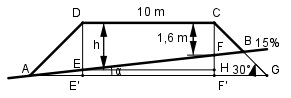

Aufgabe 209 Der Damm soll als Lärmschutz entlang der Straße aufgeschüttet werden. Wie groß sind die Höhe h und die Längen AD und AB?

Die Strecke AB steigt um 15% von A nach B an. 15% entspricht einer Steigung von 15/100 = 0,15 = tan α --> α = 8,5° Im Dreieck EHF: EH = DC FH tan α = ---- | *EH EH FH = EH * tan 8,5° = 10 m * 0,15 = 1,5 m ED = h = HF + FC = 1,5 m + 1,6 m = 3,1 m Im Dreieck AF’F: FH + HF’ tan α = ---------- |*(AE’ + 10) AE’ + 10 tan α * (AE’ + 10) = FH + HF’ |-FH tan α * (AE’ + 10) – FH = HF’ Im Dreieck AE’D: HF’ = EE’ h + EE’ tan 30° = --------- |*AE’ AE’ tan 30° * AE’ = h + EE’ |-h EE’ = HF’ = tan 30° * AE’ – h Gleichgesetzt: tan α * (AE’ + 10) – FH = tan 30° * AE’ – h tan 8,5° * AE’ + 10 * tan 8,5° - FH = = tan 30° * AE’ – h |-tan 8,5° * AE’ 10 * tan 8,5° - FH = = AE’ * (tan 30° - tan 8,5°) – h | +h 10 * tan 8,5° + h – FH = = AE’ *(tan 30° - tan 8,5°) |:(tan 30°- tan 8,5°) 10 * tan 8,5° + h - FH AE’ = ------------------------ = tan 30° - tan 8,5° 10 m * 0,15 + 3,1 m – 1,5 m = ----------------------------- = 7,3 m 0,5774 – 0,15 Im Dreieck AE’D : AE’ cos 30° = ----- |*AD AD cos 30° * AD = AE’ |:cos 30° AE’ 7,3 m AD = --------- = --------- = 8,4 m cos 30° 0,866 Im Dreieck AGB: Sinussatz: Fall SWW: AB 10 m + 2 * AE’ --------- = ---------------------- | *sin 30° sin 30° sin (180° - 30° - α) (10 m + 2 * AE’)*sin 30° AB = -------------------------- = sin (180° - 30° - α) (10 m + 2 * 7,3 m)*0,5 = ------------------------ = 19,8 m 0,6225